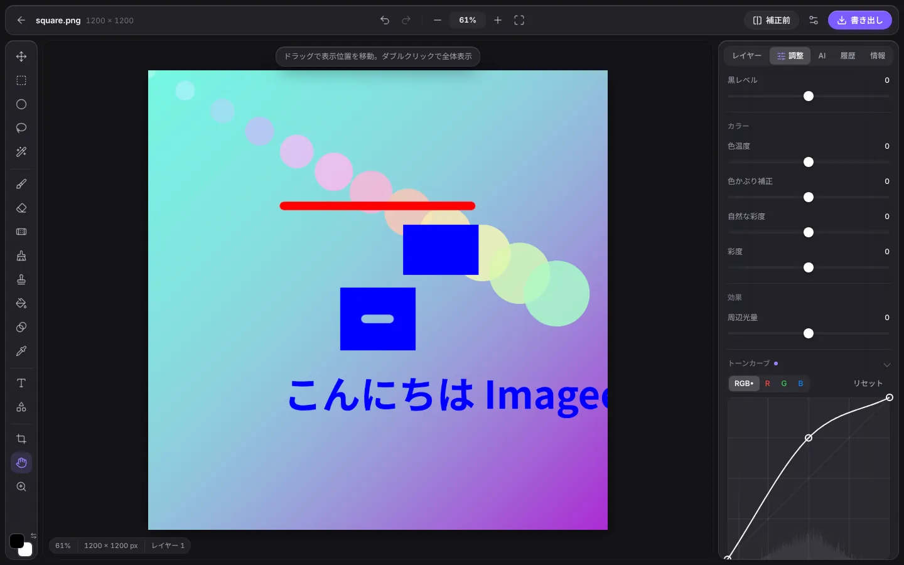
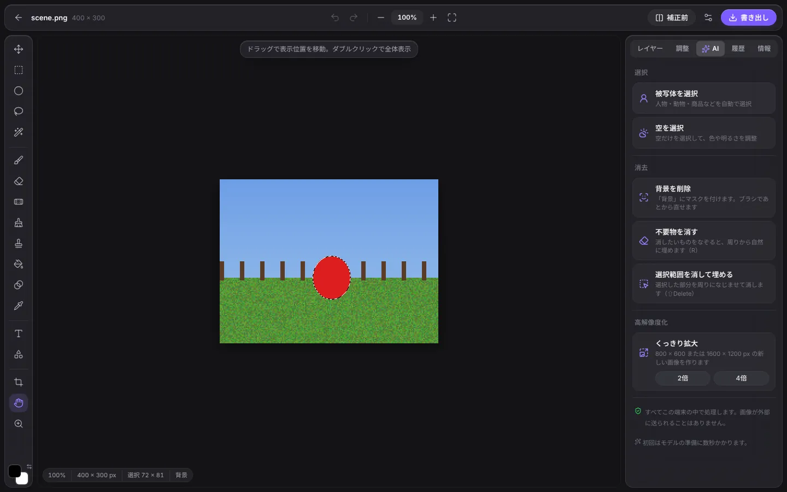
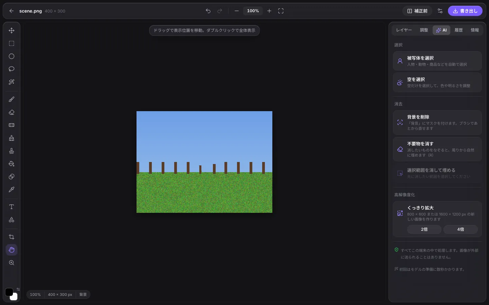
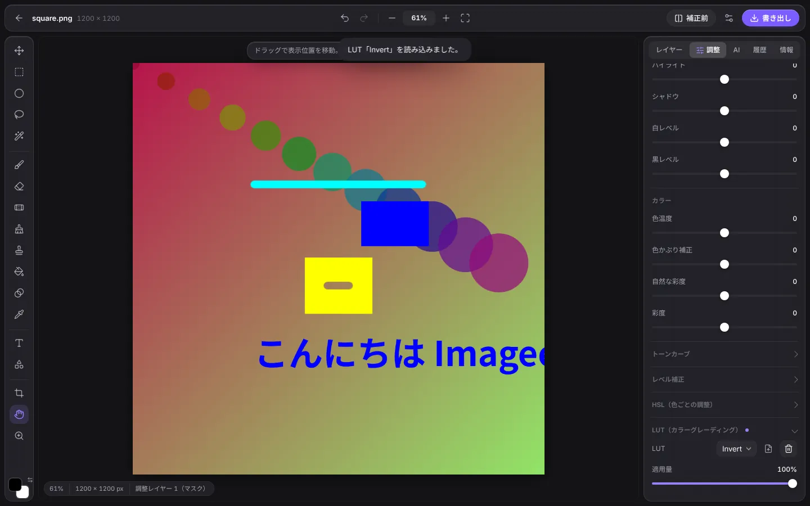
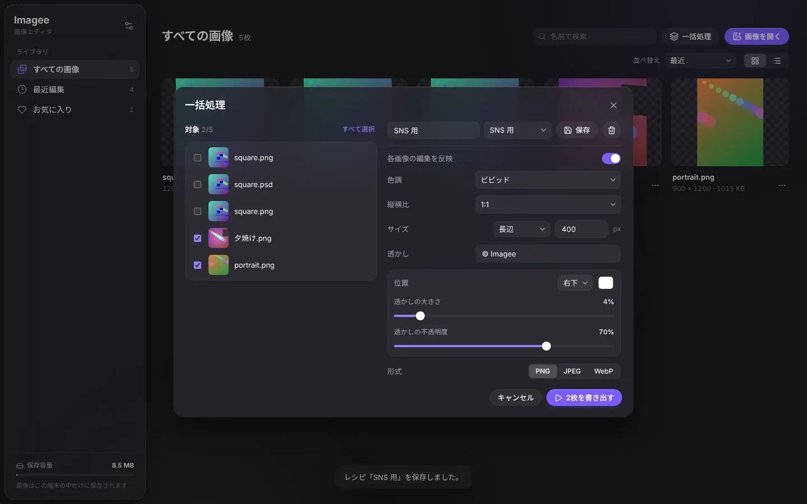

色と明るさ
露光量・ハイライト・シャドウなどの基本調整に加えて、トーンカーブ、レベル補正、8 色の HSL、3D LUT（.cube）、プリセット。すべて GPU でリアルタイムに反映します。
Web・Windows・macOS
レイヤー、カーブ、修復ブラシ、PSD、一括処理。背景削除や不要物の消去といった AI 機能まで、すべてこの端末の中で動きます。アカウントもアップロードも必要ありません。

人気の画像編集サービスの定番機能を、迷わず使える形にまとめました。
露光量・ハイライト・シャドウなどの基本調整に加えて、トーンカーブ、レベル補正、8 色の HSL、3D LUT（.cube）、プリセット。すべて GPU でリアルタイムに反映します。
画像・テキスト・図形・調整レイヤーを重ねて、描画モードや不透明度、マスクで仕上げます。調整レイヤーはあとから何度でも直せます。
筆圧対応のブラシ、塗りつぶし、グラデーション。長方形・楕円・なげなわ・自動選択に、ぼかし・拡張・縮小で境界を整えます。
スポット修復ブラシでシミやゴミをなぞって消し、コピースタンプで細かく描き直せます。
Photoshop の PSD をレイヤーごと読み書きできます。.imagee 形式なら、すべてを編集できる状態のまま保存できます。
色調・縦横比・サイズ・透かし・形式をレシピにして、何枚でもまとめて書き出せます。
オフラインで動く AI


画像はブラウザやアプリの中だけで処理し、保存も端末の中だけです。オフラインでも使えます。
補正はすべて非破壊。描画も含めて 500 回分さかのぼって元に戻せ、背景削除もマスクなので取り消せます。
形式と画質を変えると、実際のファイルサイズをその場で表示します。位置情報などのメタデータは含めません。
ブラウザ版とデスクトップ版は同じ画面です。キーボードショートカットは定番の画像編集アプリに合わせています。


インストールせずに使うなら、ブラウザ版をどうぞ。ホーム画面やデスクトップに追加すると、アプリとしてオフラインでも開けます。
デスクトップ版は現在コード署名の準備中です。初回起動時に警告が出た場合、macOS ではアプリを右クリックして「開く」、Windows では「詳細情報」から「実行」を選んでください。過去のバージョンとチェックサムは リリース一覧 にあります。